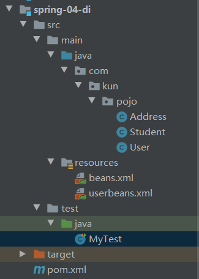
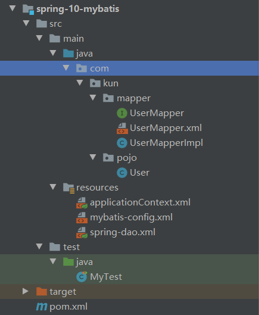

写一个demo梳理一下，略过细节
架构：

首先建立一个实体类User
1 | //略过get、set方法 |
将User的实例注册到userbeans.xml中
1 | <?xml version="1.0" encoding="UTF-8"?> |
在函数中调用
1 | public void userTest() { |
Spring-Mybatis联合使用
架构：

实体类POJO–User
1 | import lombok.Data; |
接口类UserMapper
1 | public interface UserMapper { |
接口实现类UserMapperImpl
1 | public class UserMapperImpl implements UserMapper{ |
UserMapper.xml
1 | <?xml version="1.0" encoding="UTF8" ?> |
mybatis-config.xml
1 | <?xml version="1.0" encoding="UTF8" ?> |
spring-dao.xml
1 | <?xml version="1.0" encoding="UTF-8"?> |
applicationContext.xml
1 | <?xml version="1.0" encoding="UTF-8"?> |
Mytest
1 |
|